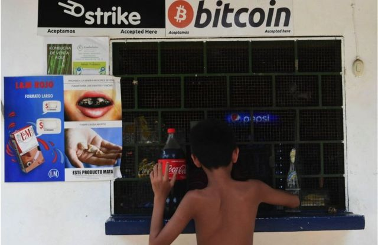
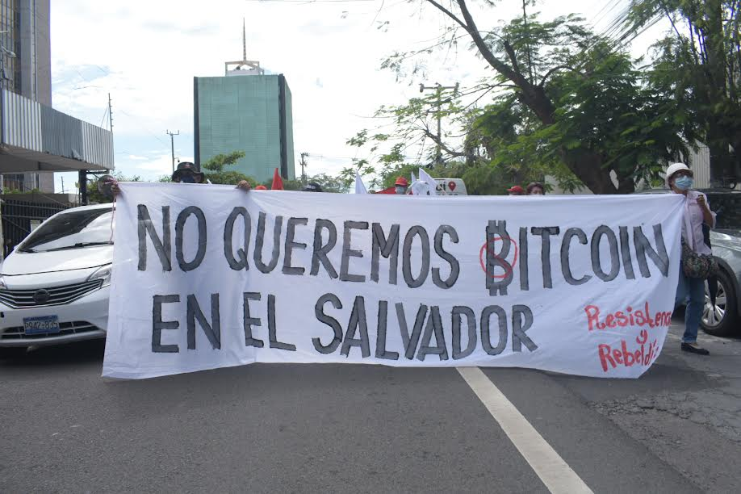

Antecedentes
El uso del bitcoin como moneda en El Salvador se había experimentado desde al menos 2019, y el actual presidente Bukele expresó interés en Bitcoin mientras era alcalde de San Salvador en 2017. Bloomberg News informó en junio de 2021 que Bukele y algunos miembros del partido Nuevas Ideas había sido dueño de Bitcoin durante años.El pueblo costero de El Zonte ha tenido un experimento activo en marcha para usar Bitcoin en la economía local desde 2019, donde algunos trabajadores han recibido su salario y pueden pagar facturas en Bitcoin, y otros lo usan para comprar alimentos y otros productos en las tiendas locales.
En una conferencia para bitcoin en Miami en junio de 2021, el presidente Nayib Bukele anunció que buscaría promulgar una ley que permitiera al bitcoin como moneda de curso legal, diciendo que "generaría empleos y ayudaría a brindar inclusión financiera a miles de personas fuera de la economía formal". Según Bukele, la ley está dirigida a aproximadamente el 70% de los salvadoreños sin cuenta bancaria, y aumentará su inclusión. Bukele argumentó que el proyecto de ley aumentaría la inversión y reduciría las tarifas de los servicios actuales para las remesas. Para impulsar el proyecto de ley, Bukele cooperó con Strike, una empresa de servicios financieros que utiliza Lightning Network para la liquidación, y Jack Mallers, su CEO.
-

Aprobación del BITCOIN
En la madrugada del 09 de junio del 2021, el Congreso de El Salvador aprobó una ley que convertirá al bitcoin en moneda de curso legal en el país.El país centroamericano busca así dinamizar su economía y se convierte así en la primera en adoptar una criptomoneda, que los usuarios utilizan principalmente como refugio de valor a largo plazo, a la espera de que su precio suba a lo largo del tiempo.
La ley establece que el cambio entre el bitcoin y el dólar estará establecido "libremente por el mercado" y no estará sujeto a impuestos sobre las ganancias de capital al igual que cualquier moneda de curso legal.
La legislación también indica que todo agente económico beberá aceptar el bitcoin como forma de pago "cuando así le sea ofrecido por quien adquiere un bien o servicio" y que el órgano Ejecutivo creará la estructura institucional necesaria para la circulación de la criptomoneda, de acuerdo a lo establecido en la ley.
Fué enviada al Presidente de la República de El Salvador, a lo cual se adelantó celebrando en Twitter.
La #LeyBitcoin acaba de ser aprobada por mayoría calificada en la @AsambleaSV.
— Nayib Bukele 🇸🇻 (@nayibbukele) June 9, 2021
¡62 de 84 votos!
¡Historia! #BTC🇸🇻
Contexto actual del BITCOIN en El Salvador
El Salvador se convertirá este martes 7 de septiembre del 2021, en el primer país del mundo en adoptar el bitcoin como moneda de curso legal, con el objetivo de reducir los costes en los envíos de remesas, atraer inversión extranjera e impulsar el consumo interno. Sin embargo, los salvadoreños han salido a las calles en los últimos días protestando la rapidez con la que se tomó la decisión de adoptar la criptomoneda y alertan del escepticismo de que se implemente. La nueva ley pondrá en El Salvador al Bitcoin como moneda de igual validez que el dólar estadounidense (actual moneda de El Salvador). Mientras que el dólar estadounidense es una moneda estable y que ha demostrado su valor durante décadas, el Bitcoin destaca por su alta volatilidad en el mercado."En ningún momento va a afectar a nadie", ha destacado Bukele, quien ha querido eliminar toda "incertidumbre, confusión y dudas" a su iniciativa regalando 30 dólares en su equivalente a bitcoins a quienes descarguen gratuitamente en su teléfono la billetera electrónica o 'wallet', denominada 'CHIVO'. Asimismo, se le otorgará la residencia a las personas extranjeras que inviertan tres bitcoins en El Salvador. El mandatario pretende así "promover la utilización del bitcoin en la economía y que la gente tenga un incentivo de bajarse la aplicación para que de esta manera arranque el sistema". Solo en esta ocasión será imposible convertir la criptomoneda en dólares para extraerlos en un cajero automático.-
